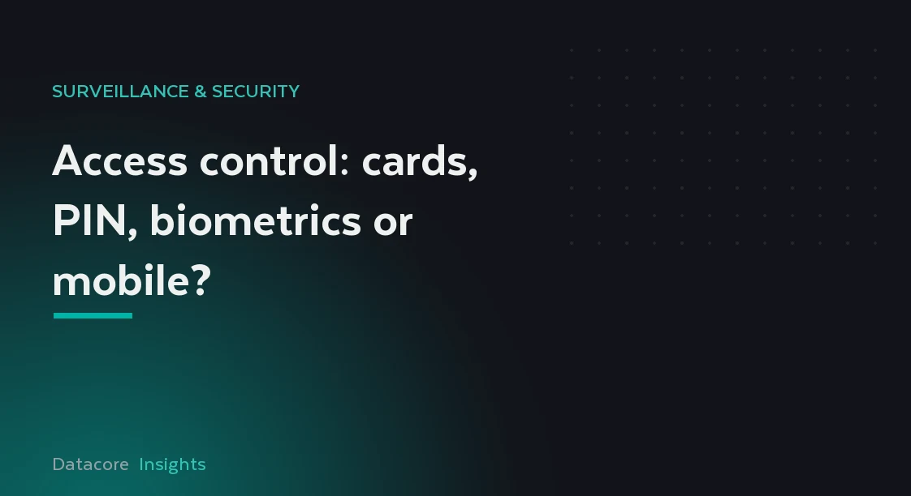

كل بيانات اعتماد تُوازن بين الأمن والراحة. والخيار الصحيح، وغالباً ما يكون مزيجاً، يعتمد على الباب ومعدل المرور وما يجب أن يتكامل معه النظام.

يبدو اختيار بيانات اعتماد الوصول قراراً يتعلق بالمنتج، لكنه في الحقيقة قرار يتعلق بالمخاطر. يقع كل خيار في مكان ما على خط يمتد بين الأمن والراحة، والإجابة الصادقة لمعظم المباني مزيج: نقرة سريعة عند الردهة الرئيسية وشيء أقوى على غرفة خوادم أو غرفة نقد. ولا يزال التأطير الكلاسيكي مفيداً: التحقق بشيء تملكه، أو شيء تعرفه، أو شيء أنت عليه.
البطاقات والمفاتيح الإلكترونية مألوفة ورخيصة الإصدار، لكن صيغ التقارب القديمة يسهل استنساخها، بينما تسدّ البطاقات الذكية المشفّرة الحديثة تلك الثغرة. ولا يضيف رمز PIN شيئاً لحمله لكنه يُشارَك ويُسترَق بالنظر ويُنسى. أما القياسات الحيوية، سواء بصمة الإصبع أو الوجه أو قزحية العين، فلا يمكن إعارتها أو نسيانها في المنزل وتربط الحدث بشخص، مقابل جهد التسجيل ومعدل المرور والعناية بالخصوصية. وتلغي بيانات الاعتماد عبر الهاتف، بتقنية Bluetooth أو NFC، عملية الإصدار المادي تماماً ويسهل منحها أو إلغاؤها عن بُعد.
لا توجد بيانات اعتماد واحدة تصلح لكل مكان. يكافئ المدخل المزدحم السرعة، فتُبقي البطاقة الذكية أو الهاتف الطوابير متحركة. ويبرّر الباب عالي الأمن استخدام عاملين، بطاقة مع PIN أو بطاقة مع بصمة، بحيث لا تفتح بيانات اعتماد مفقودة وحدها شيئاً. والفخّ هو تطبيق أقصى درجات الأمن على كل باب، ما يُحبط المستخدمين حتى يُبقوا الأبواب مفتوحة ويُبطلوا النظام. طابق عدد العوامل مع المخاطر خلف كل باب. وفي الممارسة، أفضل المنظومات هادئة بشأن الأمن، تحمي الأبواب المهمة دون إبطاء ما لا يهمّ منها.
بيانات الاعتماد ليست إلا الواجهة. يمنع منع المرور المزدوج (anti-passback) تمرير بطاقة واحدة لدخول ثانٍ ويدعم دقة إحصاء المتواجدين لأغراض التجمّع. وتحدّ الجداول الزمنية ممّن يدخل ومتى، ويسجّل سجل تدقيق كامل كل منح ورفض بحسب الشخص والباب والوقت. تحوّل هذه الميزات مجموعة من الأقفال إلى نظام يمكنك استجوابه بعد أي حدث وإعداد تقارير عنه بثقة.
يثبت التحكم في الوصول جدارته حين يتكامل. فربط كل حدث وصول بلقطات الكاميرا يتيح للمشغّل أن يرى، لا أن يقرأ فحسب، من استخدم بيانات الاعتماد ويحسم نزاعات التسلّل بسرعة. والتكامل مع إنذار الحريق ليس خياراً بل سلامة أرواح: عند الإنذار، يجب أن تفشل أبواب مسارات الهروب بأمان وتُفتَح كي لا يُسدّ الخروج أبداً، مهما كانت سياسة الوصول.
تُكامل Datacore أنظمة التحكم في الوصول مع CCTV وأنظمة الحريق ككلٍّ واحد مصمَّم وموثَّق بدل ثلاثة منتجات مركّبة معاً؛ اطلب من فريق الأمن لدينا رسم مزيج بيانات الاعتماد المناسب لكل باب في مبناك.
إنها تربط الحدث بشخص ولا يمكن إعارتها، وهذا يساعد. لكن معدل المرور والتسجيل ومعالجة الخصوصية أمور مهمة، وكثيراً ما تجمع الأبواب الأقوى بين قياس حيوي أو بطاقة وعامل ثانٍ بدل الاعتماد على واحد.
نعم. تتجنّب بيانات الاعتماد عبر الهاتف بتقنية Bluetooth أو NFC طباعة البطاقات وإرسالها، ويمكن إصدارها أو إلغاؤها عن بُعد، ما يناسب المقاولين والموظفين المتناوبين.
تُضبط أبواب مسارات الهروب لتفشل بأمان وتُفتَح عند إنذار الحريق كي يتمكن الناس من الخروج دائماً. ويتجاوز سلوك سلامة الأرواح هذا قواعد الوصول العادية.
شارك جدول الكميات أو جدول المواد أو المخططات وسنعود إليك بنطاق مسعّر وبرنامج زمني. وإن كنت في مرحلة أبكر، فسنقوم بزيارة ومسح للموقع.